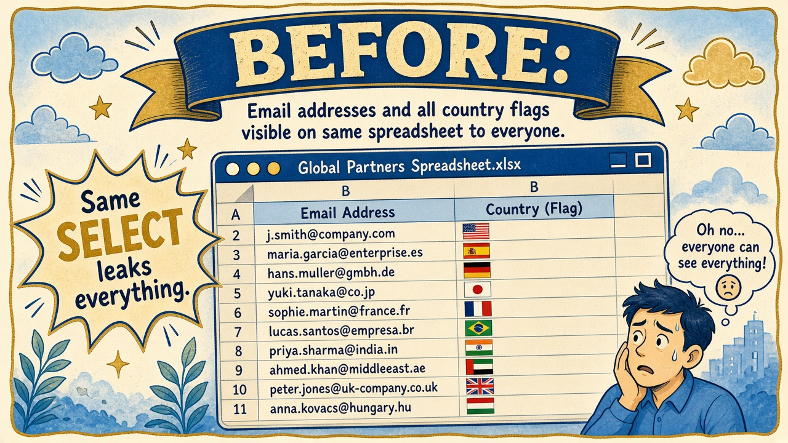
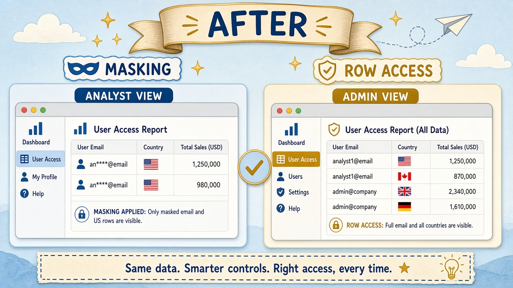

Read every Teach first section before you copy SQL.
RBAC decides if you can query a table. Governance decides which cells and rows you see.
Needs Lab 00 customers + Lab 06 FR_ANALYST / AR_LAB_READ.
1
Picture first. Look at BEFORE/AFTER → read the comic → then run tiny SQL.
If a paragraph feels heavy, skip to the next comic strip — Dev explains it out loud for you.
Business problem
Kai needs customer lists for a US campaign. Sam forbids clear emails and non-US rows in Kai’s results.
“Same table for Priya (clear) and Kai (masked + US only). No second copy forever.”
Solution you will buildSECURE.CUSTOMERS_PII from LAB.CUSTOMERS, masking policy on EMAIL,
row access policy on COUNTRY, object tags for cost/class.
Proof: lab admin sees all · FR_ANALYST + SECONDARY ROLES NONE sees masked US rows.

Before Same SELECT leaks email + all countries.

After Masking + RAP — different views per role.
Episode 08 · Start here
Sam draws a curtain and a velvet rope.
SamCompliance
Masking = curtain over a column. Row access = velvet rope at the door — some rows never enter Kai’s result set.
PriyaYou
Same SELECT *, different movie depending on my role. Policies use CURRENT_ROLE() — primary role only.
Column problem → masking · Row problem → RAP · Don’t swap them on the exam.
See it — two different problems
Column
Masking policy
You get the row, but sensitive cells rewrite (e.g. ****@example.com).
Admin: ava.patel@… Analyst: ****@example.com
Row
Row access policy
Entire rows disappear from the result. Analyst never sees CA/UK customers.
Admin: 5 rows Analyst: US only
Label
Object tags
Metadata stickers for cost chargeback and classification — not a substitute for masking.
Who feeds CUSTOMERS_PII? What breaks if we drop it?
Objects in this lab
1 · SourceLAB.CUSTOMERSLab 00 sample
2 · Secure copySECURE.CUSTOMERS_PIIpolicies attach here
3 · PoliciesMP_EMAIL + RAP_USCURRENT_ROLE()
4 · ProofFR_ANALYSTSECONDARY ROLES NONE
Before Step 1
Why a SECURE copy?
KaiAnalyst
Can’t we just mask LAB.CUSTOMERS? Why invent SECURE?
DevCoach
Practice rooms stay messy. Locked room = where policies live. Exam story: put sensitive governed objects in a dedicated schema.
1 Create SECURE.CUSTOMERS_PII
What this does: Copies Lab 00 customers into the locked schema so we can attach policies without surprising other labs.
SQL · secure table
USE ROLE ROLE_CORE_LAB_ADMIN;
USE WAREHOUSE WH_CORE_XS;
USE DATABASE ALPINE_RETAIL;
USE SCHEMA SECURE;
CREATE OR REPLACE TABLE CUSTOMERS_PII AS
SELECT * FROM ALPINE_RETAIL.LAB.CUSTOMERS;
SELECT COUNT(*) AS N FROM CUSTOMERS_PII;
✓ N = 5 (if Lab 00 sample finished)
2 Masking policy on EMAIL
What this does: Lab admin / ACCOUNTADMIN see clear email. Everyone else sees ****@…. Body uses CURRENT_ROLE() (primary only).
SQL · create + attach mask
CREATE OR REPLACE MASKING POLICY MP_EMAIL_MASK AS (VAL STRING)
RETURNS STRING ->
CASE
WHEN CURRENT_ROLE() IN ('ROLE_CORE_LAB_ADMIN', 'ACCOUNTADMIN')
THEN VAL
ELSE REGEXP_REPLACE(VAL, '.+@', '****@')
END;
ALTER TABLE CUSTOMERS_PII MODIFY COLUMN EMAIL
SET MASKING POLICY MP_EMAIL_MASK;
✓ Policy attached to EMAIL column
Before Step 3
Riley mixes up masking and RAP
RileyPeer engineer
I’ll mask COUNTRY to hide Canada. Done, right?
SamCompliance
Wrong tool. Masking rewrites a cell; the row still exists (and other columns leak). RAP removes the row. Canada needs RAP.
3 Row access policy on COUNTRY
What this does: Lab admin sees all countries. FR_ANALYST only gets rows where COUNTRY = 'US'.
SQL · RAP create + attach
CREATE OR REPLACE ROW ACCESS POLICY RAP_COUNTRY_US
AS (COUNTRY STRING) RETURNS BOOLEAN ->
CASE
WHEN CURRENT_ROLE() IN ('ROLE_CORE_LAB_ADMIN', 'ACCOUNTADMIN')
THEN TRUE
WHEN CURRENT_ROLE() = 'FR_ANALYST' AND COUNTRY = 'US'
THEN TRUE
ELSE FALSE
END;
ALTER TABLE CUSTOMERS_PII
ADD ROW ACCESS POLICY RAP_COUNTRY_US ON (COUNTRY);
✓ RAP bound to COUNTRY column
4 Tags for cost and classification
What this does: Stickers auditors and FinOps can query — “this table is PII” and “charge RETAIL_OPS.”
SQL · tags
CREATE TAG IF NOT EXISTS TAG_COST_CENTER
ALLOWED_VALUES 'RETAIL_OPS', 'DATA_PLATFORM', 'MARKETING';
CREATE TAG IF NOT EXISTS TAG_DATA_CLASS
ALLOWED_VALUES 'PUBLIC', 'INTERNAL', 'PII', 'SENSITIVE';
ALTER TABLE CUSTOMERS_PII SET TAG
TAG_COST_CENTER = 'RETAIL_OPS',
TAG_DATA_CLASS = 'PII';
✓ Tags set on table (optional: tag EMAIL column too — see SQL file)
5 Grant SELECT path + proof as lab admin
What this does: Lets AR_LAB_READ see the secure table, then shows clear emails and all countries as lab admin.
SQL · grants + admin proof
GRANT USAGE ON SCHEMA ALPINE_RETAIL.SECURE TO ROLE AR_LAB_READ;
GRANT SELECT ON TABLE ALPINE_RETAIL.SECURE.CUSTOMERS_PII
TO ROLE AR_LAB_READ;
SELECT CUSTOMER_ID, FULL_NAME, EMAIL, COUNTRY
FROM CUSTOMERS_PII
ORDER BY CUSTOMER_ID;
✓ Clear emails · US + CA + UK visible
Before Step 6
Secondary roles break masking proofs too
PriyaYou
I switched to FR_ANALYST and still see clear email. Is the masking policy broken?
DevCoach
Policy body checks CURRENT_ROLE() = primary. Table access still unions secondaries — but if lab admin is secondary you may still pass other checks. Always USE SECONDARY ROLES NONE for FR proofs.
6 Proof as FR_ANALYST (SECONDARY ROLES NONE)
What this does: Proves masked email + US-only rows. Run alone — not in a Run All with lab-admin setup.
SQL · analyst proof
USE ROLE FR_ANALYST;
USE SECONDARY ROLES NONE;
USE WAREHOUSE WH_CORE_XS;
USE DATABASE ALPINE_RETAIL;
SELECT CURRENT_ROLE(), CURRENT_SECONDARY_ROLES();
SELECT CUSTOMER_ID, FULL_NAME, EMAIL, COUNTRY
FROM SECURE.CUSTOMERS_PII
ORDER BY CUSTOMER_ID;
✓ EMAIL like ****@… · only US countries · no CA/UK
Exam presses further — say these out loud
Basics attached the policies. Cover each answer before you open it.
Q1. Masking vs row access — column vs row?
Say: Masking rewrites column values; rows still return. RAP returns a boolean per row — false rows never appear. Pick masking for PII cells, RAP for tenancy/region filters.
Q2. Why does CURRENT_ROLE() in a policy ignore secondary roles?
Say: Policy expressions evaluate CURRENT_ROLE() as the primary role only. That’s why FR proofs need the intended primary and why secondary-role unions confuse access tests.
Q3. What are object tags for if they don’t hide data?
Say: Metadata for cost chargeback, classification, and automation. Auditors query tags; FinOps groups spend. Tags don’t replace masking/RAP.
Q4. Classification and lineage — exam one-liners?
Say: Classification helps discover/label sensitive columns. Lineage shows upstream/downstream dependencies for impact analysis. Both are governance awareness topics on Core.
Q5. Can Kai bypass masking with SELECT EMAIL || '' or a view?
Say: Masking applies to the column through queries; you don’t get clear text by wrapping expressions as a non-privileged role. (Owners/exempt roles still see clear — least privilege on those roles matters.)
Priya’s wrap-up (say this out loud)
“We copied customers into SECURE.CUSTOMERS_PII, masked EMAIL for non-admins, and added a row access policy so FR_ANALYST only sees US rows.
Tags labeled the table PII with a cost center. I proved as FR_ANALYST with SECONDARY ROLES NONE — masked emails, US only.
Outcome: one table, role-aware privacy, ready for FinOps Lab 09.”
Next
Lab 09 — resource monitors, credit math, ACCOUNT_USAGE lag.